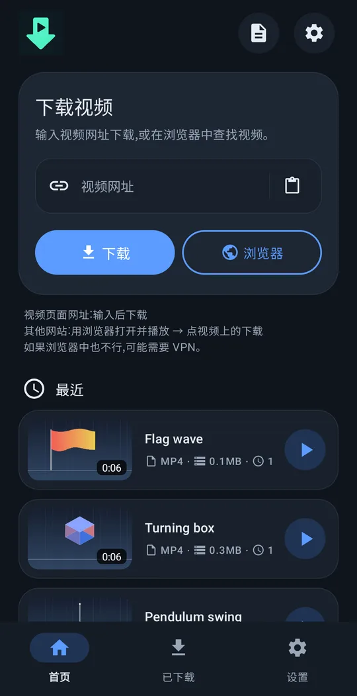
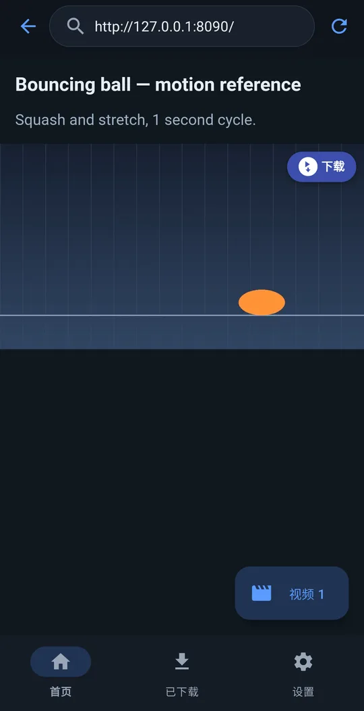
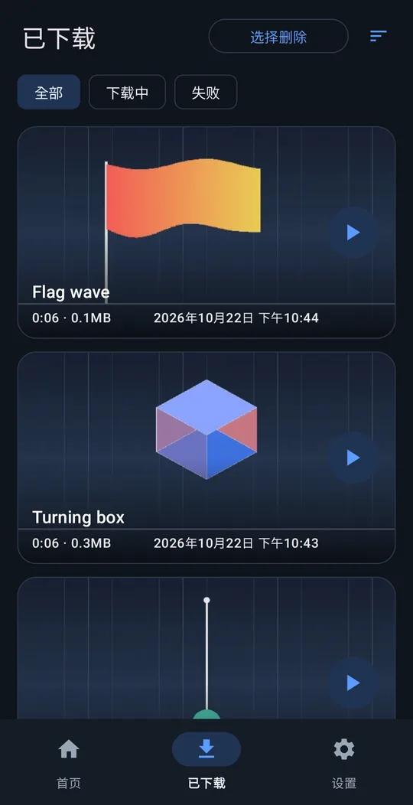
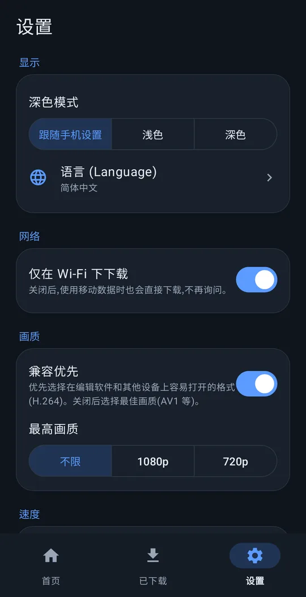

任何视频都能下载！！
粘贴视频链接，轻松下载。
Android 8.0 及以上 · 免费 · 无需注册
使用方法




功能
粘贴链接下载
支持大多数常用视频网站。
视频上的“下载”按钮
在内置浏览器中，页面播放的视频上会出现“下载”按钮——很多用链接下载不了的网站也能下载。
方便剪辑
保存在 Movies/VideoRef。开启“兼容优先”后，会选择剪辑应用能直接打开的格式。
后台继续
关闭屏幕也会继续下载。还可以设置“仅在 Wi-Fi 下下载”和最高画质。
10 种语言
English, 한국어, 简体中文, 繁體中文, 日本語, Español, Deutsch, Français, Português (Brasil), Русский。浅色 / 深色主题。
不向我们发送任何信息
无需注册，也不会向开发者发送任何内容。
安装
- 用上方按钮下载安装文件（APK）。
- 在手机上打开下载的文件。
- 如有提示，允许浏览器或文件应用安装未知应用，然后点安装。
支持 just downloader
just downloader 是免费的。如果它帮你节省了时间，一点小小的支持就是下次更新的动力。
常见问题
真的免费吗？
是的，完全免费。无需注册，也没有试用期。
会发送我的信息吗？
不会发送个人信息。除非你自己发送错误报告，否则不会向开发者发送任何内容。隐私政策
支持哪些网站？
大多数常用视频网站粘贴链接即可。如果不行，用内置浏览器打开页面、播放视频后点视频上的“下载”。带有防复制保护的付费流媒体视频无法保存。
遇到问题？
设置 → 帮助 → 报告问题 会生成附带应用日志的邮件，发送至 support@4dir.net。